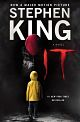
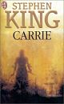
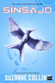

El nombre del viento
Autor: Patrick Rothfuss
La novela cuenta la historia de Kvothe, un personaje legendario que,
tras años de retiro, accede a contar a un cronista los verdaderos
motivos por los que se convirtió en leyenda
Genero
- novela
- epopeya
- Fantasia Heroica

El temor de un hombre sabio
Autor: Patrick Rothfuss
«Todo hombre sabio teme tres cosas: una tormenta en el mar, las
noches sin luna y la cólera de un hombre bueno» La secuela de la
extraordinaria El Nombre del Viento
Genero
- Literatura Fantástica
- epopeya
- Fantasia Heroica

La Música Del Silencio
Autor: Patrick Rothfuss
La música del silencio es una novela corta fantástica y una de las
primeras narraciones derivadas de la Crónica del Asesino de Reyes.

Angeles y Demonios
Autor: Dan Brown
El profesor de simbología Robert Langdon recibe una misteriosa llamada
a las tantas de la madrugada y se ve envuelto en una persecución en la
que tratará de evitar la destrucción de la Ciudad del Vaticano
Genero
- Misterio
- Aventura
- Novela policial

La Conspiración
Autor: Dan Brown
Un nuevo satélite de la NASA demuestra la existencia de un extraño
objeto enterrado en el hielo del Ártico. Este descubrimiento supone
una victoria muy necesaria para la política espacial de Estados Unidos
y es clave para la futura elección de su presidente.
Genero
- Ciencia Ficción
- Techno-thriller
- Suspenso

El Código Da Vinci
Autor: Dan Brown
La mayor conspiración de los últimos 2000 años está a punto de ser
desvelada. Robert Langdon recibe una llamada en mitad de la noche: el
conservador del museo del Louvre ha sido asesinado en extrañas
circunstancias y junto a su cadáver ha aparecido un desconcertante
mensaje cifrado.
Genero
- thriller psicológico
- Ficción Conspirativa
- Novela policial

La Niebla
Autor: Stephen King
La mañana después de una violenta tormenta eléctrica, una niebla
espesa se propaga rápidamente por la pequeña ciudad de Bridgton,
Maine, reduciendo la visibilidad y provocando la aparición de
numerosas criaturas ocultas que atacan a cualquier persona que se
encontraba en su casa
Genero
- terror
- Ciencia Ficción

IT
Autor: Stephen King
Siete niños son aterrorizados por un malvado monstruo -al que llaman
«Eso»- que es capaz de cambiar de forma, alimentándose del terror que
produce en sus víctimas.
Genero
- terror
- Aventura
- Drama

Carrie
Autor: Stephen King
Relata de manera realista las vivencias de una joven diferente,
víctima de una madre inestable, fanática religiosa, que le quita todo
tipo de privilegio o libertad, hundiéndola en un abismo de soledad y
de traumas sociales.

Los juegos del hambre
Autor: Suzanne Collins
«Los Juegos del Hambre», un evento anual realizado en Panem donde un
chico y una chica, de cada distrito con edades comprendidas entre los
doce y los dieciocho años, deberán luchar a muerte entre ellos
mientras son observados por televisión nacional.
Genero
- Ciencia Ficción
- Aventura
- Post Apocalíptica

En Llamas
Autor: Suzanne Collins
En Llamas es la segunda entrega de la saga Los Juegos del Hambre, una
trilogía que sigue cosechando adeptos y buenas críticas en todo el
mundo.
Genero
- Ciencia Ficción
- Aventura
- Post Apocalíptica

Sinsajo
Autor: Suzanne Collins
Todo empieza cuando Katniss Everdeen logra salir del tercer "Vasallaje
de los Veinticinco", los septuagésimo quintos Juegos del Hambre. ...
Después de su rescate por los rebeldes del distrito 13, Katniss está
convencida de convertirse en "El Sinsajo": un símbolo de la rebelión
contra el Capitolio.
Genero
- Ciencia Ficción
- Aventura
- Post Apocalíptica